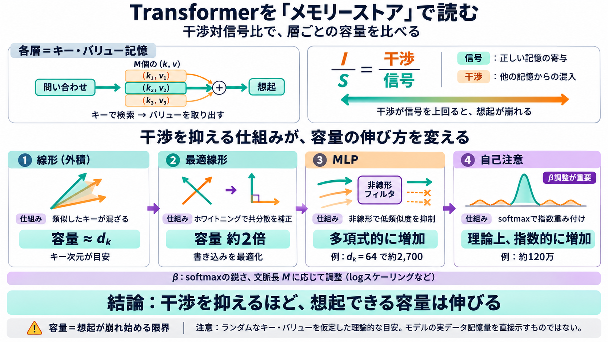

Alex Wang — you could have invented transformers… | AI/TLDR
Wang estimates the capacity of each store before interference ruins recall. With a key dimension of 64, an outer-product…

Memory Storeとして読む
各層を「キー・バリュー記憶（memory）」として見なし、問い合わせ時の干渉がどれだけ信号を上回るかで容量を比較します。
統一尺度が必要
線形層・MLP・自己注意は見た目も役割も違いますが、「正しい情報が混ざらず出るか？」という観点で同じ土俵に置けます。
各層＝メモリーストア
各層は「キー（検索用ベクトル）とバリュー（取り出したい情報のベクトル）の組をM個持つ関数」とみなします。
容量＝干渉が支配する点
「正しい記憶の寄与（signal）」に対して「他の記憶からの混入（interference）」が大きくなると想起が崩れ、そこが容量の目安になります。
外積の線形記憶
線形外積メモリでは、キーが直交でないため記憶を増やすほど混ざり、干渉が信号を飲み込みます。
最適線形：ホワイトニング
回帰／最小二乗の発想で (K^T K)^{-1} を入れると、キーの共分散をならし干渉を抑えられます。
MLP：低類似度を潰す
MLPでは、類似度が小さい（負や小さい）キーの寄与を ReLU や平方付きReLU（GLU系）で強く減衰させ、干渉の増え方を緩めます。
自己注意：指数重み付け
自己注意では類似度を指数関数（softmax）で重み付けし、干渉抑制を“より強い選別”として実装します。
β調整：鋭さを制御
β（softmaxの鋭さ）を文脈長 M に応じて調整する必要があり、logスケーリングや YaRN のような工夫が重要になります。
まとめ：容量の伸び方
同じ「干渉対信号比」という見方で、線形→MLP→自己注意へ進むにつれて容量の伸び方が段階的に強くなります。
注意書き：仮定と限界
容量推定は「ランダムなキー・バリュー」を仮定し、単一層がランダム想起できる上限としての目安です。学習後の表現やデータ依存は別扱いです。
結論：干渉を抑えるほど容量が伸びる
Transformer各層は「記憶ストア」として見れば、干渉抑制のメカニズム（線形/非線形/softmax）こそが容量の違いを生みます。
Wang estimates the capacity of each store before interference ruins recall. With a key dimension of 64, an outer-product…
We’ll develop this perspective and show how you can go from a linear layer to something better, an MLP, which improves b…
Oct 16 to do better we need to suppress the noise we can suppress interference by adding a nonlinearity, which turns …
9 in Appendix E for numerical experiments verifying this for finite data and dimension. Once W 2 O has learned the corre…
into chapters and training a router to select relevant subsets per input. This enables scaling to 262K memory tokens whi…